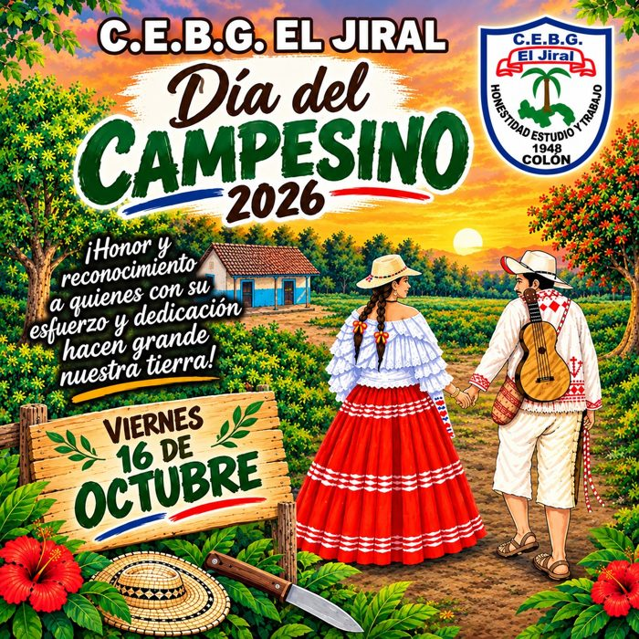

🥊 Topón 1Lunes 21 de septiembre
Programa oficial de actividades: topones de reinas, jornada cultural, ranchos interactivos por provincia y comarca, y el cierre con la Feria Campesina.
Cada una de las 20 reinas (11 de Primaria + 9 de Premedia) tiene su propia página de fotos, desde el inicio hasta el final del reinado.

🌽 16 de octubreDurante los recreos se enfrentarán dos provincias por día. Como Primaria tiene 11 candidatas (número impar), un grupo se enfrenta en trío y el resto en duelos de dos. La presentación oficial de provincias y reinas será el lunes 21 de septiembre.
Una candidata por cada provincia o comarca, elegida por sorteo entre las 11.
Durante los recreos se enfrentarán dos provincias por día. Como Primaria tiene 11 candidatas (número impar), un grupo se enfrenta en trío y el resto en duelos de dos.
El viernes 16 de octubre se celebran dos topones y elecciones de reina — uno en la mañana y otro en la tarde. El rancho, la venta de comida y la limpieza son actividades conjuntas que se desarrollan durante toda la jornada, mañana y tarde.
Se saca por sorteo una candidata por cada provincia. Topón y elección en la mañana.
Una candidata por salón de Premedia. A cada salón se le asigna su provincia al azar, mediante sorteo. Topón y elección en la tarde.
Foto oficial el lunes 21 de septiembre, obligatoriamente frente al fondo campesino instalado en el gimnasio.
Gana la fotografía con más reacciones "Me gusta" en las redes del centro educativo.
Jueves 15 de octubre de 2026 — última oportunidad para votar antes de la jornada final.
El viernes 16 de octubre, entre 10:30–11:00 a.m., se elige a la Reina de Primaria con el juego de la flor más larga: cada candidata escoge una flor al azar y gana quien saque la de mayor longitud.
El viernes 16 de octubre, en la tarde (hora por confirmar), se elige a la Reina de Premedia con el mismo juego: cada candidata escoge su flor y gana la que saque la más larga.
Programa completo del día, diseñado para finalizar puntualmente a las 2:00 p.m.
Viernes 2 de octubre — los estudiantes pueden asistir vestidos de civil (sin uniforme).
$0.50 por estudiante.
Además del topón tradicional con la flor, este año se suman nuevos títulos y una competencia de recaudación por Yappy.
La ganadora del topón de la flor en Primaria. Además de reinar el 16 de octubre, podrá participar en todas las marchas de noviembre.
La ganadora del topón de la flor en Premedia. Representará al colegio en todas las marchas del mes de noviembre.
Competencia de recaudación entre 9°A, 9°B y 9°C. Gana el salón que más recaude por Yappy antes del viernes 16 de octubre, 10:00 a.m. El dinero lo recoge Consejería. Ver el afiche oficial abajo.
Primaria también tendrá su propia competencia de recaudación por Yappy, para apoyar al conjunto típico.
Cada salón de primaria representa una provincia o comarca, con el apoyo de un grupo de Premedia.
Prejardín A · Lesbia Muñoz
V-B · Yessenia Clark
VII-A · Leticia de Palacios
Beto Correa · Alexis Del Mar
Jardín C · Tilsa Garibaldi
I-A · Heidi De León
IX-C · Samuel Ortega
Patricia Reyes · Encelma Álvarez
Prejardín B · Milvia Ortega
V-A · Geraldine Magallón
VII-B · Erika Pimentel
Isaura Góndolo · Nitzi Williams
Jardín A · Albertina Ortiz
IV-C · Anabelis Gallardo
VIII-C · Nairobys Sáenz
Berta Barreno
II-C · Carmen Gaitán
III-A · Betzaida Rodríguez
Ayllen Nieto · Inglés–Religión
Doris Andrión
Jardín B · Ángela Hall
VI-B · Alejandrina Salazar
Yadira de Gracia · Español
Magalis Rodríguez
I-B · Zulma Becerra
V-C · Elaisa Jaramillo
VIII-B · Leonela Rivera
Arline Henry · Faustina Rodríguez
I-C · Ananías Benítes
VI-A · Viodelka Goitía
VII-C · Ronald González
Danisue Valdés · Gillian Barría
II-A · Telma Grenald
II-B · Ana Grenard
IX-A · Miriam Valencia
Yitzuri Vargas · Yetzagelis Batista
III-B · Jenifer Dean
III-C · Telma Escobar
IX-B · Wendy Harren
Laura Rodríguez · Yisel Mariscal — Psicóloga
IV-A · Angélica Jiménez
IV-B · Rosa Perea
VIII-A · Juana Brown
Claribel Camargo · Nelia Velásquez — Psicóloga
Cada salón entrega su propuesta de rancho al profesor encargado, a más tardar el viernes 25 de septiembre.
Los ranchos deben quedar armados desde el jueves previo al evento. La escuela abre de 3:00 p.m. hasta la noche para el montaje.
Solo quedan pendientes los últimos detalles de decoración y preparación de actividades.
Cada docente especialista fue repartido de forma pareja entre los 11 ranchos como apoyo adicional en la construcción (ver columna "Apoyo en Construcción" arriba). El día del evento, además, pueden reforzar cualquier rancho o comisión según se necesite.
Distribución de Primaria y Premedia. Puede enviar a cada docente su asignación individual por WhatsApp.
| N° | Salón / Materia | Docente | Plato / aporte asignado | Enviar |
|---|---|---|---|---|
| 1 | P-J-A | Lesbia Muñoz | 2 cajas de donuts | |
| 2 | P-J-B | Milvia Ortega | 2 cajas de donuts | |
| 3 | J-A | Albertina Ortiz | 2 cajas de donuts | |
| 4 | J-B | Ángela Hall | 2 cajas de donuts | |
| 5 | J-C | Tilsa Garibaldi | 2 cajas de donuts | |
| 6 | I-A | Heidi De León | Arroz con pollo | |
| 7 | I-B | Zulma Becerra | Ensalada de papa y zanahoria | |
| 8 | I-C | Ananías Benítes | Arroz con vegetales | |
| 9 | II-A | Telma Grenald | Ensalada de papa con remolacha | |
| 10 | II-B | Ana Grenard | Arroz con poroto y coco | Teléfono pendiente |
| 11 | II-C | Carmen Gaitán | Ensalada de coditos | |
| 12 | III-A | Betzaida Rodríguez | Arroz con guandú y coco | |
| 13 | III-B | Jenifer Dean | Ensalada de repollo con pasitas y zanahoria | |
| 14 | III-C | Telma Escobar | Arroz con frijoles y coco | |
| 15 | IV-A | Angélica Jiménez | Ensalada de papa y pollo | |
| 16 | IV-B | Rosa Perea | Pollo guisado | |
| 17 | IV-C | Anabelis Gallardo | Pollo frito | |
| 18 | V-A | Geraldine Magallón | Saus | |
| 19 | V-B | Yessenia Clark | Chicheme | |
| 20 | V-C | Elaisa Jaramillo | Tamales | |
| 21 | VI-A | Viodelka Goitía | Puerco frito | |
| 22 | VI-B | Alejandrina Salazar | Puerco frito | |
| 23 | Educación Física | Beto Correa | Café, 1 libra | |
| 24 | Educación Física | Isaura Góndolo | Leche, azúcar y vasos para café | Teléfono pendiente |
| 25 | Familia y Desarrollo | Berta Barreno | Leche, azúcar y vasos para café | |
| 26 | Inglés | Danisue Valdés | 1 caja de soda blanca + 25 platos loncheros | |
| 27 | Inglés | Laura Rodríguez | 1 caja de soda blanca + 100 cubiertos/tenedores | |
| 28 | Inglés | Patricia Reyes | 1 paquete de vasos grandes para sopa | |
| 29 | Inglés | Arline Henry | 1 caja de soda + 25 vasos de 12 oz | |
| 30 | Inglés | Yitzuri Vargas | 1 caja de soda naranja + 100 tenedores | |
| 31 | Educación Especial | Claribel Camargo | 1 caja de soda negra + platos de 8 oz + tapas | |
| 32 | Educación Especial | Magalis Rodríguez | 1 caja de soda blanca + 25 vasos para sopa | |
| 33 | Informática | Doris Andrión | 1 caja de soda negra + platos de 8 oz + tapas |
Cada comisión debe entregar con anticipación su planificación, responsables y materiales necesarios.
Esta comisión será liderada por los tres profesores encargados. Más adelante se indicará en cuál tarea específica participará cada uno.
Acceso exclusivo del administrador. Los mensajes se preparan para enviarse por WhatsApp desde el número 6926-2339.
Escriba la contraseña de administrador para ver los teléfonos y los botones de envío.